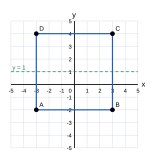
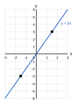
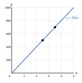
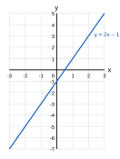
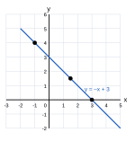
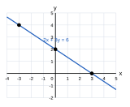
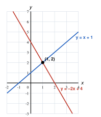

(i), (ii) AB පාදයේ දිග ඒකක 6 කි. එබැවින් C = (3, 4) හා D = (−3, 4).
(iii) AB: y = −2 BC: x = 3 CD: y = 4 DA: x = −3
(iv) සමමිති අක්ෂ: x = 0 (y අක්ෂය) හා y = 1

| x | −2 | −1 | 0 | 1 | 2 |
|---|---|---|---|---|---|
| y | −4 | −2 | 0 | 2 | 4 |
(iii) x = 1.5 වන විට y = 3
(iv) y = −3 වන විට x = −1.5
(v) නැත. x = −1 වන විට y = 2 × (−1) = −2 වේ; 2 නොවේ.

(i) y = 200x
| x (kg) | 1 | 2 | 3 | 4 |
|---|---|---|---|---|
| y (රු.) | 200 | 400 | 600 | 800 |
(iv) සහල් 2.5 kg ක මිල = රු. 500
(v) රු. 700 කට සහල් 3.5 kg

| x | −2 | −1 | 0 | 1 | 2 |
|---|---|---|---|---|---|
| y | −5 | −3 | −1 | 1 | 3 |
(iii) අනුක්රමණය m = 2, අන්තඃඛණ්ඩය c = −1
(iv) k = 2(4) − 1 = 7
(v) අනුක්රමණය 2 ම වේ, අන්තඃඛණ්ඩය 2: y = 2x + 2

| x | −2 | −1 | 0 | 1 | 2 | 3 | 4 |
|---|---|---|---|---|---|---|---|
| y | 5 | 4 | 3 | 2 | 1 | 0 | −1 |
(iii) අන්තඃඛණ්ඩය = 3; x අක්ෂය හමු වන ලක්ෂ්ය (3, 0)
(iv) x = 1.5 වන විට y = 1.5; y = 4 වන විට x = −1
(v) මහා කෝණයකි, මන්ද අනුක්රමණය (−1) ඍණ අගයකි.

(i) (d) 2y = 4x + 6 → y = 2x + 3 (e) y + 3x = 1 → y = −3x + 1
| රේඛාව | (a) | (b) | (c) | (d) | (e) | (f) |
|---|---|---|---|---|---|---|
| අනුක්රමණය m | 3 | −2 | ½ | 2 | −3 | 3 |
| රේඛාව | (a) | (b) | (c) | (d) | (e) | (f) |
|---|---|---|---|---|---|---|
| අන්තඃඛණ්ඩය c | 2 | 5 | −4 | 3 | 1 | −1 |
(iii) සුළු කෝණ (m ධන): (a), (c), (d), (f) මහා කෝණ (m ඍණ): (b), (e)
(iv) (a) හා (f) සමාන්තර වේ, මන්ද දෙකෙහිම අනුක්රමණය 3 වන බැවිනි.
(i) y = 3x − 2
(ii) y = −x + 4
(iii) සමාන්තර නිසා අනුක්රමණය 2, c = −3 → y = 2x − 3
(iv) c = 0; m = 6 ÷ 2 = 3 → y = 3x
(v) c = 1; m = (5 − 1) ÷ (2 − 0) = 2 → y = 2x + 1
(i) 3y = −2x + 6 → y = −(2/3)x + 2
(ii) අනුක්රමණය = −2/3, අන්තඃඛණ්ඩය = 2
(iii) x = 0 විට y = 2 → (0, 2). y = 0 විට 2x = 6, x = 3 → (3, 0)
(v) 2(−3) + 3(4) = −6 + 12 = 6. මෙය සමීකරණයේ දකුණු පසට සමාන බැවින් (−3, 4) ලක්ෂ්ය රේඛාව මත පිහිටයි.

y = x + 1
| x | −1 | 0 | 1 | 2 | 3 |
|---|---|---|---|---|---|
| y | 0 | 1 | 2 | 3 | 4 |
y = −2x + 4
| x | −1 | 0 | 1 | 2 | 3 |
|---|---|---|---|---|---|
| y | 6 | 4 | 2 | 0 | −2 |
(iii) y = x + 1: m = 1, c = 1. y = −2x + 4: m = −2, c = 4
(iv) ඡේදන ලක්ෂ්ය = (1, 2)
(v) x = 1
